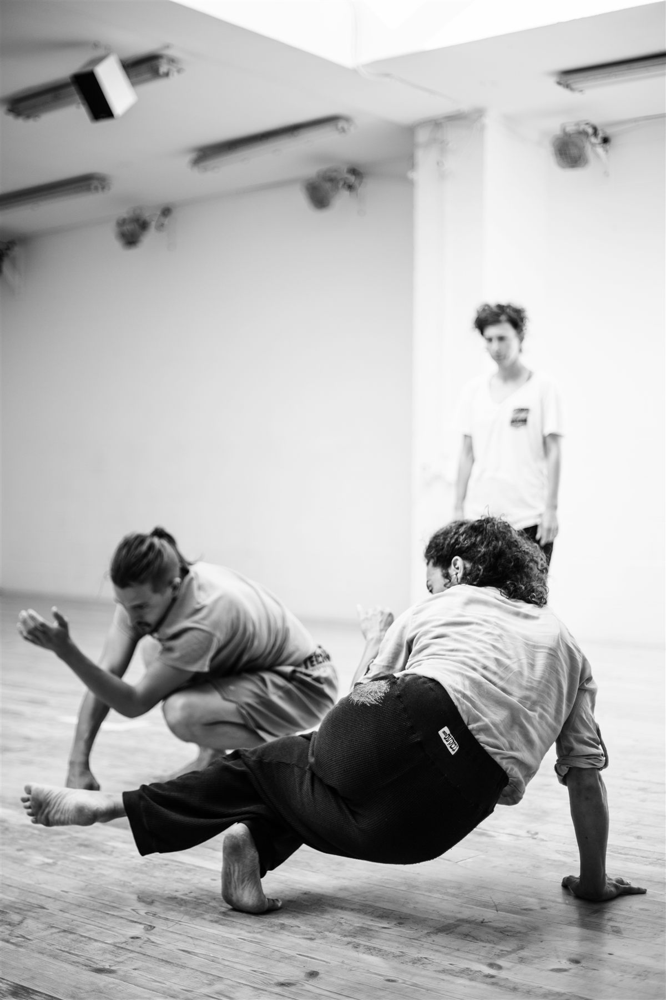

← Past
PTC Dance
Developed since 2017 by dancers and choreographers led by Valentin Rion and Ilana Reynolds
Video

Loads Vimeo when you press play · Privacy
PTC Dance Insights
Edited film of a PTC dance workshop · 2019
Texts
-
PTC_Dance research: Music/Dance Lab notes
Ilana Reynolds · 2017 · PDF, 84 KB
Read